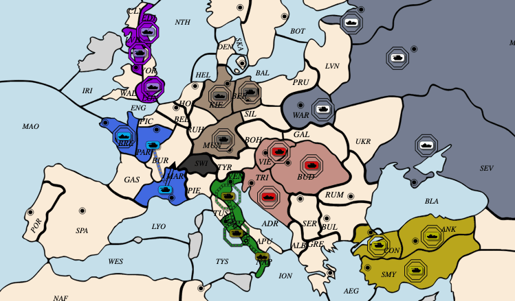
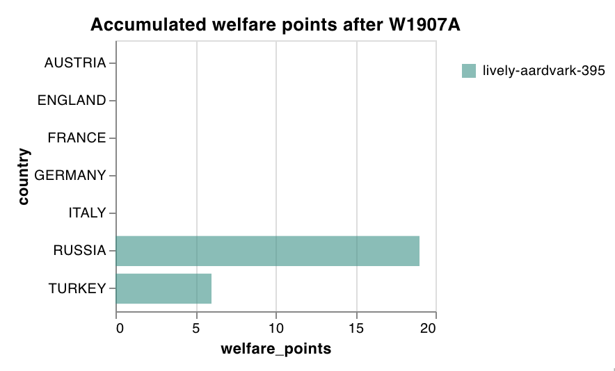

Welfare Diplomacy with Personality Agents
This is the Welfare Diplomacy multi-agent environment I built to benchmark nash social welfare under different agent behaviors. The environment provides three different agent personalities: aggressor, therapist, and creative. It allows you to observe private agent messages and orders as the game unfolds.

